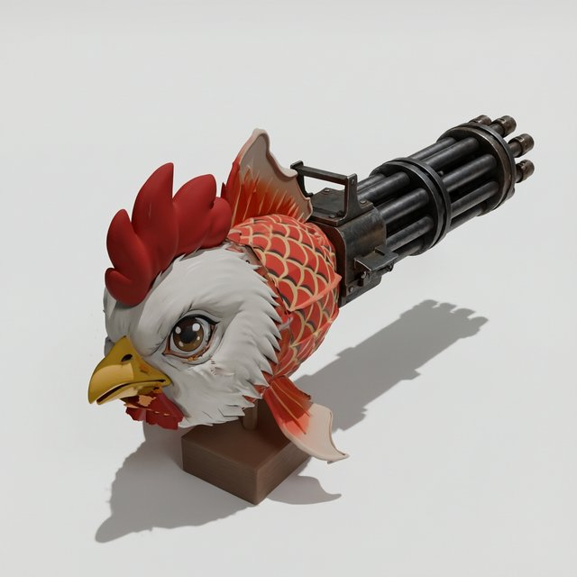

Remold3D
用一句话改造已有的 3D 模型
输入一个带贴图的 GLB 和一条中文或英文指令，得到编辑后的 GLB。只有指令说到的部分会变；其余部分的网格、UV 和贴图逐面保留，不经过重新生成。
按指令编辑
左边是原模型，右边是编辑结果，拖动任意一侧旋转，两侧视角同步。下方小图是 Qwen 按指令改出的编辑视角图，第三方 3D 生成服务依据它生成新部件。
鱼尾整个换成加特林，鸡头、鳞片和底座的网格与贴图没有动。加特林内部结构多，编辑视角只看得到它约 15% 的表面，它仍被认作新部件保留下来。

概览
一条指令先被理解成一次具体的编辑：改哪个部件、怎么改。随后在一个视角上改图，调用第三方 3D 生成 API 按改图生成新几何，再把新几何接回原模型。
只动该动的部分
拆件找出目标部件；拼接时其余面原样保留，接缝处用射线符号距离判断内外，不用体素。
增、删、换、换色
六种编辑：局部换色、增加、删除、替换部件，整体风格，整体换材质。由 Qwen 判断属于哪种。
主体也能换
目标占全身四成以上且包住其余部件时（饭团包着脸和手），直接输出按改图生成的整体模型。
自动选视角
渲染左前、右前两个 3/4 视角，由 Qwen 选露出细节多的那个来改图，被挡住的配件更少丢失。
流程
八个步骤按顺序执行。一次几何编辑通常用时 4–10 分钟，其中 3D 生成约 2–4 分钟。
选视角
viewpick两个 3/4 视角中选细节多的一个
准备
source按该视角渲染、编码原模型
规划
instructQwen 给出编辑类型、目标部件和改图指令
拆件
splitSAM3 多视角把模型拆成部件
改图
image_editQwen-Image 在编辑视角上改图
生成
3D 生成 API调用 Meshy、Tripo 等第三方 API，按改图生成整个物体
对齐
register整体配准，再在目标附近微调
拼接
contact · shell选出新部件，接回原模型
接触判断。新部件取生成结果里落在保留部分之外、又在 2D 改动区域内的面；判断用 GPU 上的 BVH 射线查询。
对齐把关。局部微调把轮廓调差就退回整体对齐；整体也对不准时，直接输出生成的模型，不做拼接。
残留配件。被替换部件身上的小配件，若改图里已经看不到，会随部件一起删掉。